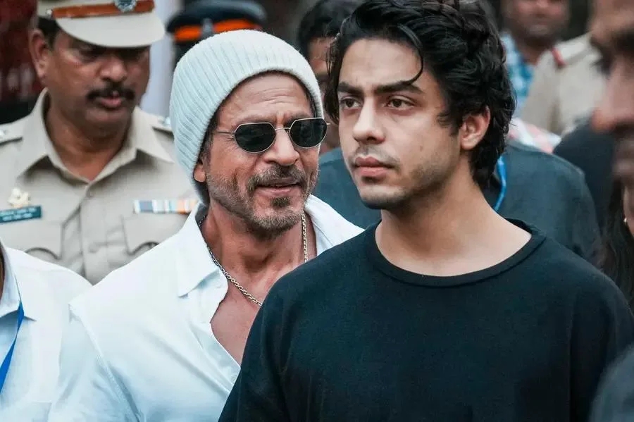
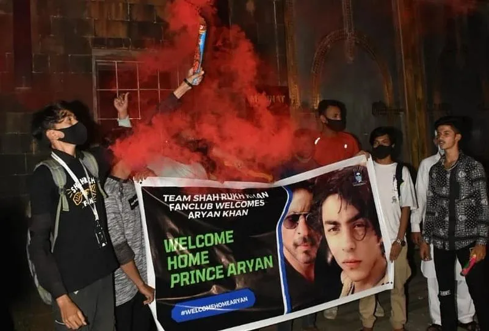

The Final Thesis · section 11 of 92
ACT III — THE RUPTURE
11. October 2021: when the personal and the public collided



5
This is the most sensitive part of the case study, and also the part that requires the greatest distinction between public facts and personal interpretation.
The documented timeline
Publicly reported events in the Aryan Khan cruise case
October 2–3, 2021 — Cruise ship raid and arrest
> The Narcotics Control Bureau conducted a raid connected to a > cruise ship off Mumbai. Aryan Khan was arrested on October 3, > along with several others, in connection with the case.
>
> Mumbai News - The Indian Express
> +1October 7 — Judicial custody
> Aryan Khan was sent to judicial custody and lodged at Arthur Road > Jail. The ensuing bail proceedings became a major national news > story.
>
> Mumbai News - The Indian ExpressOctober 20 — Bail denied by the special court
> The special court rejected his bail application. The legal > proceedings and public coverage continued for several more days.
>
> Mumbai News - The Indian ExpressOctober 28 — Bombay High Court grants bail
> The High Court granted bail. Aryan Khan was released from Arthur > Road Jail on October 30, after spending 26 days in custody.
>
> India Today
> +1May 27, 2022 — NCB chargesheet
> The NCB did not name Aryan Khan in the chargesheet filed in the > case. Contemporary reporting described this as him receiving a > clean chit in the case.
>
> India Today
The distinction is important: the arrest and custody were real, publicly documented events. The later decision not to name him in the chargesheet is also documented. It would be inaccurate to treat allegations made during the investigation as established guilt.
The public experience outside Mannat
The coverage of Mannat during this period is revealing.
After Aryan's arrest, fans left messages of support outside the residence. News reports documented posters expressing unconditional love and solidarity with Khan and his family.
Bollywood
On October 30, when Aryan returned home, hundreds of fans were reported outside Mannat, with welcome-home posters, banners, and celebrations.
Mumbai news
+1
This is an important correction to the phrase "deafening silence outside Mannat": the public record does not support a literal absence of fans. It documents solidarity and, later, celebration.
The more compelling question for the case study is whether the extraordinary public attention, the legal proceedings, the absence of Khan from conventional media appearances, and the visible support from fans created a different relationship between the star and his audience.
That question can be investigated without claiming that the public record establishes what Khan privately felt.
12. The mental and emotional impact: what can responsibly be said?
A parent's child being arrested, spending weeks in custody, and facing intense national media attention is an exceptionally serious personal event. It is reasonable to recognise that such circumstances can impose profound emotional strain on a family.
But there is a crucial distinction between describing the circumstances and diagnosing the individual.
| What is publicly documented | What remains private or unverified |
|---|---|
| The arrest, custody, bail proceedings, release, and subsequent NCB chargesheet. | Khan's precise mental state, emotional responses, and private conversations during those events. |
| The intense media coverage and the presence of fans outside Mannat. | Whether the incident changed his personal motivation toward technology, filmmaking, or digital marketing. |
| The significant period during which he was largely absent from conventional film promotion. | Whether that absence was a direct response to the arrest, a deliberate business decision, a family priority, or a combination of circumstances. |
The professional interpretation: the arrest and its aftermath form a major biographical and public-relations rupture between ZERO and Pathaan. They provide essential context for understanding the period, but the causal link between that event and a change in Khan's creative interests cannot be established from the public record alone.
It would be particularly inappropriate to present an alleged private emotional state as a fact simply because it fits the larger narrative.
The "resurrection" conversation
The phrase "SRK resurrection" is widely understandable as a fan and industry narrative about the extraordinary return of his box-office stature in 2023.
But it should be distinguished from the factual record. The three films, their releases, the public response, the renewed brand activity, and the subsequent business developments are observable. Claims about a single private turning point, a specific emotional breaking point, or a deliberate revenge strategy are interpretations unless supported by direct evidence.
For your case study, the strongest framing is that the resurrection was a public and commercial phenomenon. Its private causes remain open to investigation.